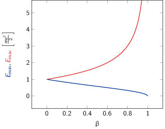

TD1 : Cinématique & Accélérateurs
1 Introduction
Noyau : AZX → Z protons + N neutrons = A nucléons (nombre de masse)
- Noyau ayant le "même" nombre de protons Z sont appelés des isotopes tandis que ceux présentant le même nombre de nucléons A sont des isobares
- Noyau ≡ objet quantique
- une fonction d'onde décrit les propriétés du noyau
- les nombres quantiques associés : spin, parité, isospin
- il possède un état fondamental et des états excités
- chaque état possède un moment électronique et un moment magnétique
Certains noyaux sont stables, d'autres radioactifs se désintégrant spontanément
\begin{align*} ^{14}_{6}\text{C} \rightarrow\,^{14}_{7}\text{N} + e^{-} + \bar{\nu}_{e} \end{align*}Pour étudier le noyau, on forme des réactions nucléaires qui obéissent à des lois de conservation (charge, nombre de nucléons, parité…). On bombarde une cible avec ≠ projectiles (γ, e-, n, p, ions lourds), à ≠ énergies. Ces réactions sont possibles avec ≠ probabilités (section efficace). On peut étudier chaque réaction dont les états finaux peuvent différer et déterminer la variation de la section efficace en fonction de l'énergie incident (fonction d'excitation) ou en fonction de l'angle de sortie (distribution angulaire).
Rayon des noyaux : En 1909, Hans Geiger et Ernest Marsden sous la direction d'Ernest Rutherford, mettent en évidence le noyau atomique en étudiant la diffusion de particules α sur des atomes d'or (Au). Antérieurement à cette expérience, la matière était conçue sous la forme d'atome contenant deux parties chargées électriquement de façons opposées. L'expérience de Rutherford montra qu'en réalité le noyau chargé positivement est de taille très petite devant le nuage électronique qui l'entoure, chargé négativement.
En supposant que le noyau soit une sphère uniformément chargée en volume et contenant A nucléons
\begin{align*} V = \frac{4}{3}\pi\,R^{3} \propto A \end{align*}On déduit que le rayon d'un noyau est proportionnel à son nombre de nucléons \(R = r_{0} \times A^{1/3}\). Expérimentalement, \(r_{0}\) est compris entre 1.2 et 1.5 fermi où 1 fm = 10-15 m = 10-13 cm. La valeur la plus probable est \(r_{0}\) = 1.25 fm.
2 Ordres de grandeurs
Calculer le volume (en cm3) et la masse volumique (en g/cm3) d'un noyau de 126C, qui est le noyau utilisé pour définir l'unité de masse atomique. Comparer à la masse volumique des matériaux courants comme le bois ou le fer.
Volume du noyau de 126C : approx. sphérique
\begin{align*} V = \frac{4}{3}\pi\,R^{3} &= \frac{4}{3}\pi\,(r_{0}\,A^{1/3})^3 \\ V(^{12}_{6}\text{C})&= \frac{4}{3}\pi\,(1.25\times12^{1/3})^3 \\ &\simeq \unit[100]{fm}^3 = \unit[10^{-37}]{cm}^3 \end{align*}Masse volumique 126C → noyau particulier à partir duquel est défini l'unité de masse atomique
\begin{align*} \unit[1]{u.m.a} = \frac{\text{masse}(^{12}_{6}\text{C})}{12} = \unit[931.5]{MeV/c}^{2} \end{align*}
d'où
\begin{align*} m(^{12}_{6}\text{C})c^2 &= 12\times\unit[931.5]{MeV} = 12\times931.5\times10^6\times\unit[1.6\,10^{-19}]{J} \\ m(^{12}_{6}\text{C}) &= \frac{12\times931.5\times1.6\,10^{-19}}{(3\,10^8)^2} = \unit[2\,10^{-26}]{kg} = \unit[2\,10^{-23}]{g}\\ \end{align*}On en déduite que la masse volumique est égale à
\begin{align*} \rho(^{12}_{6}\text{C}) = \frac{m(^{12}_{6}\text{C})}{V(^{12}_{6}\text{C})} = \frac{2\,10^{-23}}{10^{-37}} = \unit[2\,10^{14}]{g/cm}^3 \end{align*}À titre de comparaison, le bois a une densité moyenne de 0.6 – 1 g/cm3, le fer environ 10 g/cm3, la Terre de 6 g/cm3 et l'Uranium de 19 g/cm3.
Remarques : la densité au sein d'une étoile à neutrons est voisine de 1011 g/cm3
3 Cinématique
On veut étudier la désintégration en deux photons d'une particule \(a\), d'énergie de masse au repos \(mc^2\), animée d'une vitesse \(\beta=v/c\) par rapport au référentiel du laboratoire \(\mathcal{R}\), comme indiqué sur la figure ci-dessous.
- Exprimer les énergies totales \(E_1\) et \(E_2\) des deux photons dans le référentiel \(R\), en fonction de l'angle d'émission commun \(\theta^*\) des photons dans le référentiel du centre de masse \(\mathcal{R}'\). En déduire les bornes \(E_\text{min}\) et \(E_\text{max}\) de ces énergies.
dans \(\mathcal{R}'\) i.e. le référentiel du centre de masse où \(a\) est au repos et \(\Upsigma\vv{p}^{*} = \vv{0}\) :
→ Conservation de l'énergie totale :
\begin{align*} E_{a}^* &= E_1^* + E_2^*\\ mc^2 &= E_1^* + E_2^* \end{align*}→ Conservation de l'impulsion :
\begin{align*} \vv{p_a}^* &= \vv{p_1}^* + \vv{p_2}^* \\ \vv{0} &= \vv{p_1}^* + \vv{p_2}^* \\ \|\vv{p_1}^*\| &= \|\vv{p_2}^*\| \end{align*}or \(E_{1}^{*} = p_{1}^{*}c\) et \(E_{2}^{*} = p_{2}^{*}c\) d'où \(E_{1}^{*} = E_{2}^{*} = \frac{mc^{2}}{2}\).
Pour déterminer les valeurs d'énergie et d'impulsion dans le référentiel du laboratoire \(\mathcal{R}\), on applique la transformation de Lorentz le long de l'axe \(z\) au quadrivecteur énergie-impulsion
\begin{equation*} \begin{bmatrix} E\\p_xc\\p_yc\\p_zc \end{bmatrix} = \begin{bmatrix} \gamma&0&0&\beta\gamma\\ 0&1&0&0\\ 0&0&1&0\\ \beta\gamma&0&0&\gamma \end{bmatrix} \cdot \begin{bmatrix} E^*\\p_x^*c\\p_y^*c\\p_z^*c \end{bmatrix} \end{equation*} \begin{align*} E_1 &= \gamma\,E_1^* + \beta\gamma\,p_{1z}^*c = \gamma\,(mc^2/2 + \beta c\,p_{1z}^*)\\ E_2 &= \gamma\,E_2^* + \beta\gamma\,p_{2z}^*c = \gamma\,(mc^2/2 + \beta c\,p_{2z}^*) \end{align*}et
\begin{align*} p_{1z}^* &= p_{1}^*\,\cos\theta^* = +\frac{mc}{2}\,\cos\theta^*\\ p_{2z}^* &= -p_{2}^*\,\cos\theta^* = -\frac{mc}{2}\,\cos\theta^* \end{align*}soit
\begin{align*} E_1 &= \frac{\gamma\,mc^2}{2}(1 + \beta\cos\theta^*) \\ E_2 &= \frac{\gamma\,mc^2}{2}(1 - \beta\cos\theta^*) \end{align*}L'énergie minimum \(E_\text{min}\) et maximum \(E_\text{max}\) sont les mêmes pour \(E_{1}\) et \(E_{2}\) avec \(\cos\theta^{*}\in[-1;1]\) i.e.
\begin{align*} E_\text{min} &= \frac{\gamma mc^2}{2}(1 - \beta) = \frac{mc^2}{2}\sqrt{\frac{1-\beta}{1+\beta}}\\ E_\text{max} &= \frac{\gamma mc^2}{2}(1 + \beta) = \frac{mc^2}{2}\sqrt{\frac{1+\beta}{1-\beta}} \end{align*}où \(\gamma=1/\sqrt{1-\beta^{2}}\).

- On s'intéresse à l'angle d'ouverture de la paire de photons, ω, dans le référentiel du laboratoire \(\mathcal{R}\) (voir figure). Déterminer l'expression de \(\cos\omega\) en fonction de \(\cos\theta^*\).
Angle d'ouverture ω en fonction de θ*
Invariant relativiste \(I = (\Upsigma_{i}E_{i})^{2} - (\Upsigma_{i}\vv{p_{i}}^{*})^{2}\,c^{2}\) constant quelque soit le référentiel → \(I_\text{cdm} = I_\text{lab.}\)
\begin{align*} (E_1^* + E_2^*)^2 - \vv{0} &= (E_1 + E_2)^2 - (\vv{p_1}c + \vv{p_2}c)^2 \\ (mc^2)^2 &= E_1^2 + E_2^2 + 2E_1E_2 - (p_1c)^2 - (p_2c)^2 - 2p_1p_2c^2\,\cos\omega \end{align*}or \(E_{1} = p_{1}c\) et \(E_{2} = p_{2}c\) d'où
\begin{align*} \frac{(mc^2)^2}{2} &= E_1E_2 - p_1p_2c^2\,\cos\omega\\ \frac{(mc^2)^2}{2} &= E_1E_2\cdot(1 - \cos\omega) \end{align*}En remplaçant \(E_{1,2}\) par leurs expressions déduites de la question 1), on a \(E_{1}E_{2} = \left(\frac{\gamma mc^2}{2}\right)^2\cdot\left(1 - \beta^2\cos^2\theta^*\right)\), soit finalement
\begin{align*} 1 - \cos\omega = \frac{2}{\gamma^2\,(1 - \beta^2\cos^2\theta^*)} \end{align*}
Figure 3: Variation de l'angle d'émission ω entre les deux photons émis en fonction de la vitesse β de la particule désintégrée.
La figure 3 indique que plus la particule aura une vitesse grande et voisine de \(c\), plus l'émission des deux photons se fera vers l'avant \(\omega\to0\).
4 Énergie seuil
Soit une réaction entre deux particules \(a\) et \(b\), de masses respectives \(m_ac^2\) et \(m_bc^2\) :
\begin{align*} a + b \rightarrow c + d + e + f \end{align*}Les particules produites lors de cette réaction \(c\), \(d\), \(e\) et \(f\) ont pour masses respectives \(m_cc^2\), \(m_dc^2\), \(m_ec^2\) et \(m_fc^2\).
- On suppose que la réaction a lieu dans le référentiel du centre de masse des particules \(a\) et \(b\) et on se place dans le cas particulier où \(m_ac^2=m_bc^2\). Donner l'expression de l'énergie cinétique minimum, encore appelée énergie seuil dans le référentiel du centre de masse, que doit posséder chacune des deux particules \(a\) et \(b\) pour que la réaction puisse avoir lieu ?
Par définition, l'énergie seuil est l'énergie juste nécessaire à la création des particules en voie de sortie sans que ces dernières n'aient d'impulsion i.e. d'énergie cinétique.
Dans le référentiel du centre de masse, on applique la conservation de l'énergie totale sachant que les particules produites sont au repos i.e. \(\vv{p_c}^* = \vv{p_d}^* = \vv{p_e}^* = \vv{p_f}^* = \vv{0}\). Par ailleurs, \(\vv{p_a}^* = -\vv{p_b}^*\) donc \(T_{a} = T_{b} = T_{S}\) et étant donné que \(m_{a} = m_{b}\), l'énergie totale de la particule a est égale à celle de la particule \(b\). En appliquant le principe de conservation de l'énergie totale, on obtient
\begin{align*} E_a^* + E_b^* &= m_cc^2 + m_dc^2 + m_ec^2 + m_fc^2 = \Upsigma m_\text{finale}c^2\\ 2T_S + 2mc^2 &= \Upsigma m_\text{finale}c^2 \end{align*}soit
\begin{align*} T_{S} = \frac{\Upsigma m_\text{finale}c^2 - \Upsigma m_\text{initiale}c^2}{2} \end{align*}En définissant \(Q\) comme la chaleur de réaction i.e. l'énergie disponible dans la réaction où \(Q = \Upsigma m_\text{initiale}c^{2} - \Upsigma m_\text{finale}c^{2}\) et \(T_{S} = |Q|/2\), on distingue 3 situations :
- Q > 0
- la réaction est éxoénergétique c'est-à-dire spontanée. Dans ce cas, il n'y a pas d'énergie seuil, la réaction se faisant d'elle même,
- Q < 0
- la réaction est dite endoénergétique et n'est envisageable qu'à la condition de fournir de l'énergie (cinétique) en voie d'entrée.
- On suppose à présent que la réaction a lieu dans le référentiel du laboratoire, c'est-à-dire qu'on envoie une particule \(a\), d'énergie cinétique \(T_a\), sur une particule \(b\) au repos. Quelle est l'expression de la valeur minimale \(T_a\), encore appelée \(T_S\) ou énergie seuil dans le référentiel du laboratoire, pour que la réaction ait lieu ?
Réaction dans le référentiel du laboratoire : soit un faisceau de particule \(a\) envoyé sur une cible fixe constituée de particule \(b \rightarrow \vv{p_b} = \vv{0}\). L'énergie seuil est la valeur minimale de \(T_{a}\) suffisant à la création des particules \(c, d, e, f\) au repos. L'invariant relativiste \(I\) est égal à
\begin{align*} I_\text{lab.} = \left(\Upsigma m_\text{finale}c^2\right)^2 &= \left(\Upsigma E\right)^2 - \left(\Upsigma pc\right)^2\\ &= (T_S + m_ac^2 + m_bc^2)^2 - (p_ac)^2\\ &= (T_S + \Upsigma m_\text{initiale}c^2)^2 - (p_ac)^2 \end{align*}or \(E^{2} = p^{2}c^{2} + m^{2}c^{4} = (T + mc^{2})^{2} \rightarrow (pc)^{2} = T^{2} + 2Tmc^{2}\). On déduit ainsi l'expression de \(I_\text{lab.}\)
\begin{align*} I_\text{lab.} = \left(\Upsigma m_\text{finale}c^2\right)^2 &= T_S^2 + 2T_S\Upsigma m_\text{initiale}c^2 + \left(\Upsigma m_\text{initiale}c^2\right)^2 - T_S^2 - 2T_Sm_ac^2\\ &= 2T_Sm_bc^2 + \left(\Upsigma m_\text{initiale}c^2\right)^2 \end{align*}
Finalement,
\begin{align*} 2T_Sm_bc^2 + \left(\Upsigma m_\text{initiale}c^2\right)^2 &= \left(\Upsigma m_\text{finale}c^2\right)^2\\ 2T_Sm_bc^2 &= \left(\Upsigma m_\text{finale}c^2\right)^2 - \left(\Upsigma m_\text{initiale}c^2\right)^2\\ 2T_Sm_bc^2 &= \left(\Upsigma m_\text{finale}c^2 - \Upsigma m_\text{initiale}c^2\right)\left(\Upsigma m_\text{finale}c^2 + \Upsigma m_\text{initiale}c^2\right)\\ 2T_Sm_bc^2 &= |Q|\cdot\left(\Upsigma m_\text{finale}c^2 + \Upsigma m_\text{initiale}c^2\right) \end{align*}L'énergie cinétique minimum du faisceau incident est ainsi
\begin{align*} T_S^\text{lab.} = \frac{|Q|\cdot\Upsigma m_\text{initiale,finale}c^2}{2\cdot m_\text{cible}c^2} = T_S^\text{cdm}\cdot\frac{\Upsigma m_\text{initiale,finale}c^2}{m_\text{cible}c^2}\geq T_S^\text{cdm} \end{align*}5 Accélérateurs
5.1 Introduction
- cyclotron
- Le cyclotron est un type d’accélérateur de particules circulaire inventé par Ernest Orlando Lawrence et Milton S. Livingston de l'université de Californie à Berkeley au début des années 1930. Dans un cyclotron, les particules placées dans un champ magnétique suivent une trajectoire en forme de spirale et sont accélérées par un champ électrique alternatif à des énergies de quelques MeV à une trentaine de MeV.
- synchrocyclotron
- Le cyclotron perd de son efficacité quand on cherche à accélérer des protons au-delà de 10 à 20 MeV, en raison de la variation relativiste de la masse qui perturbe le fonctionnement quand elle atteint une grandeur de 1 ou 2 %. Un synchrocyclotron est un cyclotron dont la fréquence du champ électrique est changée (progressivement diminuée) pour compenser le gain de masse des particules accélérées pendant que leur vitesse commence à approcher la vitesse de la lumière. Le synchrocyclotron permet d'atteindre des énergies de l'ordre de centaines de MeV. Le premier synchrocyclotron a été construit à l’Université de Californie (Berkeley) en 1946.
- synchrotron
- La caractéristique du synchrotron est que l'intensité du champ magnétique de l'anneau est adaptée de façon synchrone à l'énergie du faisceau de particules, afin de les maintenir sur une trajectoire fixe. Il peut en outre y avoir un second anneau, avec des particules tournant en sens inverse, afin de réaliser des collisions entre particules avec une énergie utilisable très élevée. Ce sont des collisionneurs.
5.2 Exercice
Un proton de masse au repos \(m\), de vitesse \(\vv{v}\), se déplaçant dans un champ d'induction \(\vv{B}\) normal à \(\vv{v}\), parcourt une trajectoire circulaire de rayon \(R\) dans un cyclotron.
- Établir la relation liant \(R\) à \(m, q, v\) et \(B\) dans la cas relativiste.
Proton de masse \(m = \unit[938.27]{MeV/c}^{2}\) se déplaçant à la vitesse \(\vv{v}\) dans un champ d'induction \(\vv{B}\) normal à \(\vv{v}\).
PDF: \(\Upsigma\vv{F} = m\vv{a} = \frac{d\vv{p}}{dt}\)
Régime relativiste \(m = \gamma{}m_{0} \rightarrow \vv{p} = \gamma{}m_{0}\vv{v}\) et donc \(\text{d}\vv{p}/\text{d}t = \gamma{}m_{0}\text{d}\vv{v}/\text{d}t\). Or \(\text{d}\vv{v}/\text{d}t = R(\text{d}\theta/\text{d}t)^{2}\vv{u}_{r} = v^{2}/R\vv{u}_{r}\). Soit
\begin{align*} \Upsigma\vv{F} &= q\vv{v}\times\vv{B} = qvB\vv{u}_r\\ qvB &= \frac{\gamma{}m_{0}v^{2}}{R}\\ R &= \frac{\gamma{}mv}{qB} = \frac{p}{qB}\\ \end{align*}À chaque tour, \(v\nearrow\) avec \(\vv{B}=\text{constante}\) donc \(R\nearrow\)
- Montrer que le temps \(t_0\) mis par le proton pour parcourir une trajectoire circulaire dans le cyclotron est indépendant de \(v\) pour de petites valeurs de \(v\) (cas non relativiste).
Calcul de \(t_{0}\)
\begin{align*} \frac{\text{d}\theta}{\text{d}t} &= \omega = \frac{v}{R} = \frac{qbR}{\gamma{}mR} = \frac{qB}{\gamma{}m}\\ t_{0} &= \frac{2\pi}{\omega} = \frac{2\pi}{qB}\cdot\gamma{}m \end{align*}Pour \(v\ll c\), \(\gamma\sim 1\) et donc
\begin{align*} t_{0} = \frac{2\pi m}{qB} \end{align*}
- Calculer dans ce cas l'impulsion et l'énergie cinétique (en MeV), ainsi que le temps de parcours \(t_0\) d'une trajectoire circulaire pour \(B\) = 1.5 Tesla et \(R\) = 0.5 m.
\(B = 1.5\) T et \(R = 0.5\) m.
\begin{align*} p &= qBR\\ pc &= qRBc\\ pc &= 0.5\cdot1.5\cdot3\,10^{8} = \unit[225]{MeV} \end{align*} \begin{align*} T = \frac{p^{2}}{2m} = \frac{p^{2}c^{2}}{2mc^{2}} = \frac{225^{2}}{2\cdot938.3} = \unit[27]{MeV} \end{align*} \begin{align*} t_{0} = \frac{2\pi\,m}{qB} = \frac{2\pi\,mc^{2}}{qBc^{2}} = \unit[44]{ns} \end{align*}
- À partir de quelle valeur de l'énergie cinétique du proton (que l'on suppose de nouveau relativiste), le temps \(t\) mis par celui-ci pour parcourir une trajectoire circulaire dans le champ d'induction \(B\) diffère-t-il de plus de 5% du temps \(t_0\) calculé précédemment ? En déduire les limites d'un cyclotron.
\(t = \frac{2\pi\gamma\,m}{qB}\) et \(t_{0} = \frac{2\pi\,m}{qB}\)
\begin{align*} \frac{t-t_{0}}{t_{0}}&\ge5\%\\ \frac{t_{lim.}}{t_{0}} &= \gamma = 1.05\\ T = (\gamma - 1)mc^{2} &= 5\%\cdot\unit[938.3]{MeV} = \unit[47]{MeV} \end{align*}Dans un cyclotron, dès lors que l'énergie par nucléon devient supérieure à ~50 MeV, des problèmes relativistes apparaissent i.e. la particule n'est plus accélérée en phase avec le champ électrique accélérateur → synchrocyclotron ou synchrotron
- Dans un synchrotron, le rayon de courbure de la trajectoire des protons est maintenu constant au cours de l'accélération, tandis que l'induction \(\vv{B}\), toujours normale à la direction de la vitesse, a alors une valeur variable. Sachant qu'en fin d'accélération, les protons ont une énergie cinétique \(T\) = 7 TeV pour \(B\) = 5.4 Tesla, calculer le rayon de courbure de la trajectoire.
La fréquence de rotation \(f = \frac{v}{2\pi R} = \frac{qB}{2\pi m}\)
- synchrocyclotron
- on fait varier la fréquence \(f\) d'accélération pour compenser la variation de \(v\)
- synchrotron
- on fait varier le champ magnétique \(B\) pour maintenir la particule sur la même trajectoire i.e. le même rayon \(R\)
\(T\) = 7 TeV et \(B\) = 5.4 T avec \(R = \frac{\gamma mv}{qB} = \frac{pc}{qBc}\). Or
\begin{align*} (pc)^{2} &= E^{2} - m^{2}c^{4}\\ &= T^{2} + m^{2}c^{4} + 2Tmc^{2} - m^{2}c^{4}\\ &= T\cdot(T + 2mc^{2}) \sim T^{2} \end{align*}d'où
\begin{align*} R = \frac{T}{qBc} = \frac{7\,10^{12}\cdot1.6\,10^{19}}{1.6\,10^{19}\cdot5.4\cdot3\,10^{8}} = \unit[4.3]{km} \end{align*}soit une circonférence de 26 km.
On considère la collision de 2 protons d'énergie cinétique 7 TeV dans des anneaux.
\begin{align*} p + p \rightarrow p + p + N^+ + N^- \end{align*}où \(N^+\) et \(N^-\) sont des antiparticules (même masse mais charges électriques opposées). Quelle est la masse maximale des particules \(N\) qui pourraient être ainsi créées dans la collision ?
\(T_{S} = |Q|/2\) avec \(Q = \Upsigma\,m_\text{initiale}c^{2} - \Upsigma\,m_\text{finale}c^{2}\) et
\begin{align*} \Upsigma\,m_\text{initiale}c^{2} &= 2\,m_{p}c^{2}\\ \Upsigma\,m_\text{finale}c^{2} &= 2\,m_{p}c^{2} + 2\,m_{N}c^{2} \end{align*} \begin{align*} T_{S} = \frac{2m_{N}c^{2}}{2} = m_{N}c^{2} = \unit[7]{TeV} \end{align*}
On veut étudier la même réaction
\begin{align*} p + p \rightarrow p + p + N^+ + N^- \end{align*}en bombardant une cible d'hydrogène au repos par un faisceau de protons. Déterminer l'énergie seuil \(T_S\) pour que la réaction ait lieu, en supposant que les particules \(N\) ont la masse déterminée à la question précédente.
Réaction sur cible fixe
\begin{align*} T_{S} &= \frac{|Q|}{2}\cdot\frac{\Upsigma\,m_{if}c^{2}}{m_{p}c^{2}}\\ &= \frac{2m_{N}c^{2}}{2}\cdot\frac{4m_{p}c^{2}+2m_{N}c^{2}}{m_{p}c^{2}}\\ &\simeq\frac{2\,(m_{N}c^{2})^{2}}{m_{p}c^{2}}\\ &\simeq\unit[100\,10^{6}]{GeV} = \unit[100]{PeV} \end{align*}
- Quel serait alors, dans un champ magnétique \(B\) = 5.4 Tesla, le rayon de courbure de la trajectoire d'un proton qui aurait l'énergie cinétique \(T_S\) ?
Rayon de courbure
\begin{align*} R = \frac{pc}{qBc} \simeq \frac{T_{S}(\text{eV})}{Bc} = \frac{100\,\text{PeV}}{5.4\cdot3\,10^{8}} = \unit[60\, 000]{km} \end{align*}